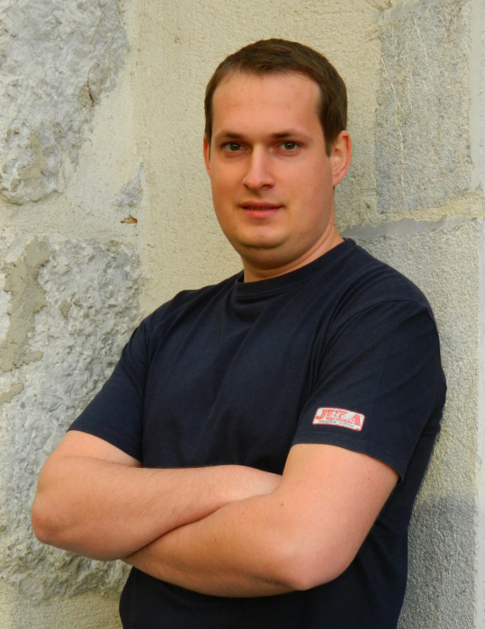

Postdoc - Ecole Normale Superieure Paris (2016-2017)
ATER - Universite de Grenoble (2015-2016)
PHD (2012 - 2015)
Coordinators: Dorin Bucur and Édouard Oudet
E-mail: Beniamin.Bogosel_at_univ-savoie.fr
Professional address:
LAMA, Batiment Chablais
Campus Scientifique
73376 Le Bourget-du-Lac Cedex, France

The list of my publications and preprints, together with the pdf files can be seen here.
Below are some links to numerical computations I performed. If you want to see more details click on one of the pictures. For a more complete list check the following link.
Previous educationErasmus Stage: Universite de Savoie - January-June 2012, worked on my master thesis "Multi-Phase Optimal Partitions", coordinated by Dorin Bucur and Edouard Oudet
Master Degree: Mathematics, 2012, University of Timisoara, Romania
Bachelor Degree: Mathematics, 2010, University of Timisoara, Romania